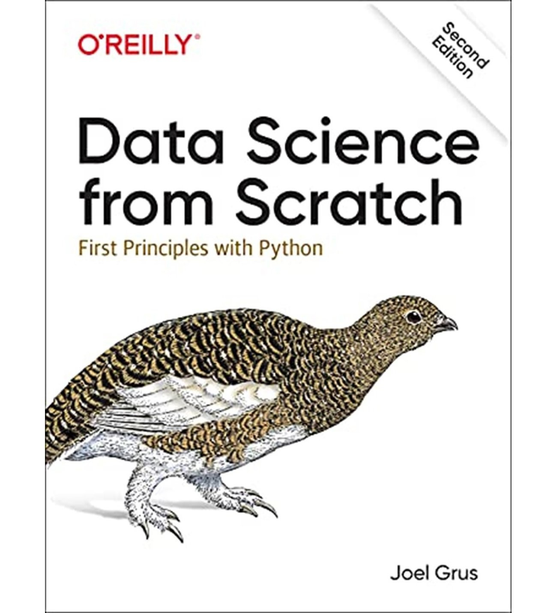

LITERARY FICTION
My Sweet Orange Tree (Meu Pé de Laranja Lima)
José Mauro de Vasconcelos · 1968
A Brazilian coming-of-age classic about imagination, tenderness, and childhood.
About me
Business Analytics · Health Informatics · Applied NLP
Hanoi, Vietnam
Bachelor in Business Analytics · Graduated with Distinction
International Journal of Innovative Research and Scientific Studies, 9(6), 91–104
Manuscript under revision following peer review · International Journal of Service Science, Management, Engineering, and Technology
40th Student Research Conference · Hanoi University of Science and Technology
Incoming Software Developer (Python) · Hanoi, Vietnam
Business Analyst · Health Informatics Analyst · Hanoi, Vietnam
Data Analyst Intern · Hanoi, Vietnam
No activities match these filters.
ON THE SHELF
LITERARY FICTION
José Mauro de Vasconcelos · 1968
A Brazilian coming-of-age classic about imagination, tenderness, and childhood.

DATA SCIENCE
Joel Grus · 2019
Data science fundamentals built from first principles in Python.
TEXT ANALYTICS
Taeho Jo · 2024
Techniques for finding patterns and meaning in text.

SYSTEMS & STRATEGY
Beth Gold-Bernstein & William Ruh · July 2004
Practical approaches to connecting systems across an organization.
VIETNAMESE LITERATURE
Vũ Trọng Phụng · 1936
A satire of status and modernization in colonial Vietnam.
PERSONAL MIXES